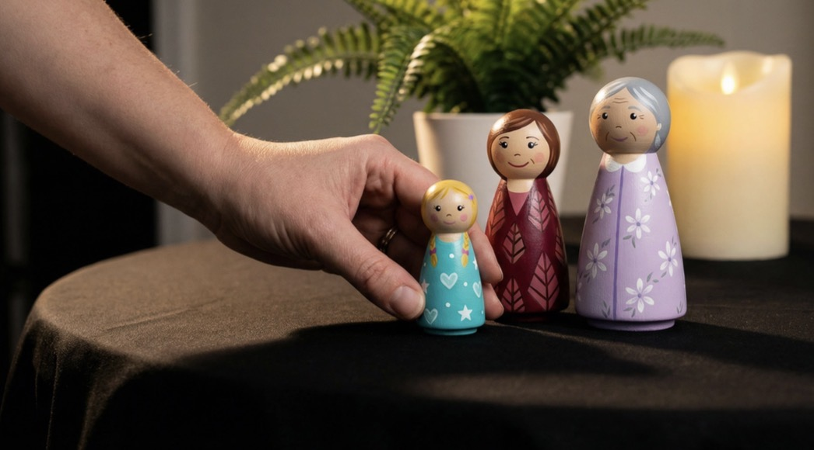

Finding Freedom from Family Patterns and Inherited Pain
Sometimes the pain doesn't belong to you. Sometimes it belongs to your mother, or her mother, or an ancestor whose story was never fully told, and it simply passed down to you, the way an heirloom does, without anyone asking if you wanted it.
Family Field is a one-on-one session inspired by Bert Hellinger's Family Constellations work. Using figurines to represent your family system, we let the field show us what's really there: hidden loyalties, inherited burdens, secrets that were never spoken but were always felt. Through truth statements, spoken with honor and respect, what was carried unconsciously can finally be seen, and released back to where it belongs.
This work is for those who've already done therapy, already done the inner work, and still carry pain — physical or emotional — that won't resolve. Sometimes it isn't yours to resolve. It's your ancestors', and it's simply been waiting for someone in the family line brave enough to see it.
Sessions are one hour minimum, whether we complete sooner or the field asks for the full time. Offered in person or on Zoom.
"I can't believe how I can feel this land in my body when we say the truth statements. I can feel how this landed even for my family."— Hannah
"I can see that I placed him in the role of my dad. He was just a stand in. I feel complete with him now, and I release him from that role. I feel my body relax as I say that."— Emily
"All the women in my lineage, my mother, grandmother, great-grandmother, all had to be strong. They didn't have a man they could rely on, so they took on being the man of the family. I can feel that this role has been passed down to me. I release this to my ancestors with love and respect. I no longer carry that generational curse."— Sylvia
Before booking a private Family Field session, let's have a chat. This conversation is to find out what you're carrying and what you want to get out of your session.
Book a 10-Minute Chat →